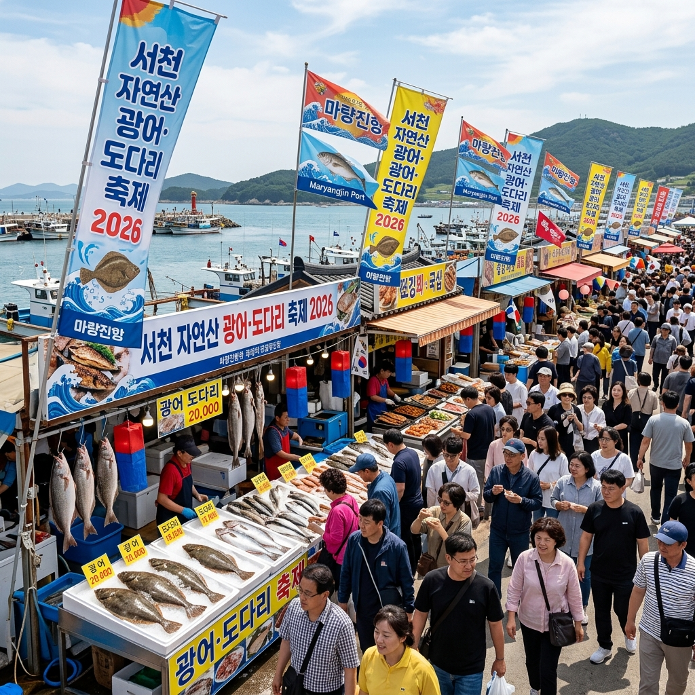
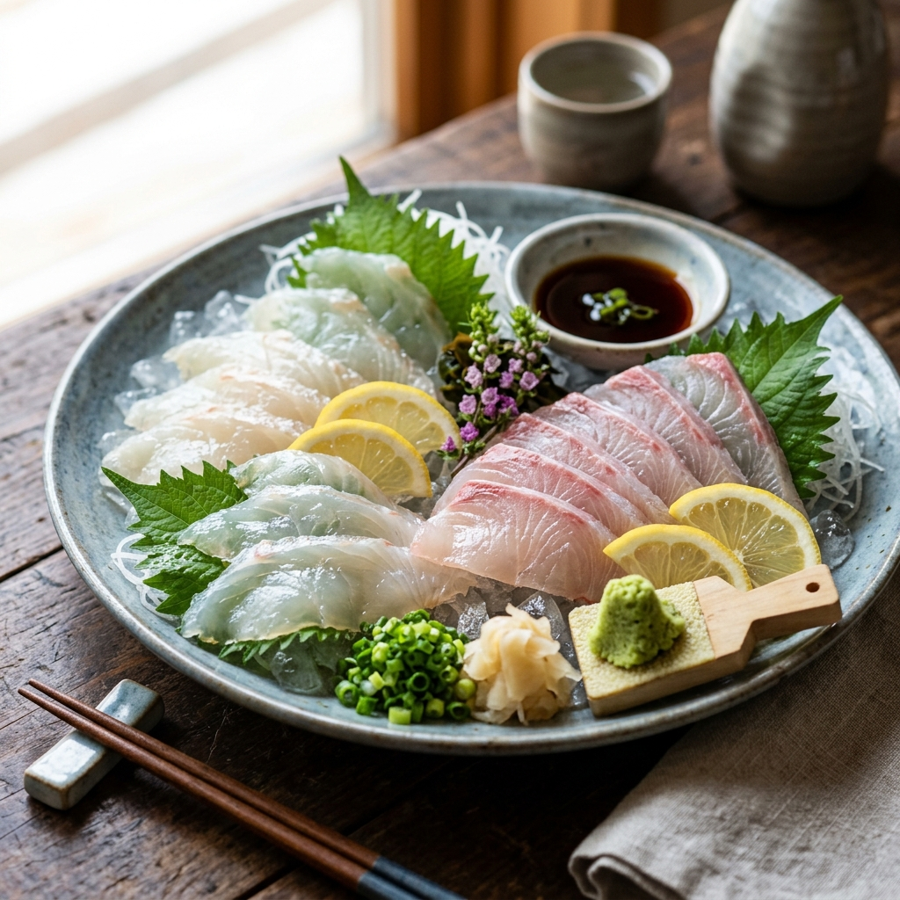

서천 자연산 광어 도미 축제 2026: 마량진항에서 즐기는 제철 미식 기행
충남 서천의 아름다운 항구 마량진항에서 5월의 싱그러운 바다를 담은 2026 서천 자연산 광어 도미 축제가 개최됩니다. 해마다 이맘때면 서해의 깊은 바다에서 갓 잡아 올린 쫄깃한 광어와 우아한 자태의 도미가 미식가들을 불러 모으는데요. 이번 포스팅에서는 축제 일정, 먹거리 정보, 그리고 인파를 피해 여유롭게 즐길 수 있는 방문 꿀팁까지 상세히 안내해 드립니다.
1. 2026 서천 광어 도미 축제 개최 일정 및 장소
올해 축제는 2026년 5월 16일(토)부터 5월 31일(일)까지 16일간 서천군 서면 마량진항 일원에서 펼쳐집니다. 5월은 서해안에서 자연산 광어와 도미가 대량으로 잡히는 황금기인데요. 평상시보다 훨씬 저렴한 가격에 산지의 신선함을 맛볼 수 있다는 것이 이번 축제의 가장 큰 매력입니다.
마량진항은 우리나라에서 몇 안 되는 일출과 일몰을 동시에 볼 수 있는 곳으로도 유명합니다. 낮에는 화려한 미식 축제를 즐기고, 저녁에는 서해의 붉은 낙조를 감상하며 낭만적인 시간을 보낼 수 있습니다. 가족, 연인과 함께 떠나는 5월 최고의 나들이 코스로 손색이 없습니다.

축제의 열기로 가득한 서천 마량진항의 활기찬 모습 / AI 제작 이미지
2. 자연산의 위엄: 제철 광어와 도미의 특징
서천 바다에서 갓 잡아 올린 자연산 광어는 양식과는 비교할 수 없는 단단한 육질과 고소한 감칠맛을 자랑합니다. 특히 5월의 광어는 산란을 앞두고 살이 올라 영양가가 높고 맛이 가장 좋습니다. 도미 역시 특유의 담백하고 우아한 풍미로 미식가들의 입맛을 사로잡습니다.
자연산 광어는 배 부분이 유난히 하얗고 깨끗한 것이 특징입니다. 축제장 직판장에서는 수족관에서 활발하게 움직이는 광어와 도미를 직접 골라 즉석에서 회로 맛볼 수 있습니다. 씹을수록 배어 나오는 은은한 단맛과 쫄깃한 식감은 산지에서만 누릴 수 있는 특권입니다.
3. 축제장의 백미: 요리 장터와 가격 정보
축제장 내 조성된 요리 장터에서는 광어 회, 도미 회뿐만 아니라 매운탕, 회무침 등 다양한 요리를 맛볼 수 있습니다. 서천군에서 가격을 정찰제로 관리하기 때문에 바가지 요금 걱정 없이 안심하고 즐기실 수 있습니다. 보통 광어와 도미 회 한 접시를 3만 원에서 4만 원대의 합리적인 가격에 제공합니다.
얼큰하게 끓여낸 매운탕은 식사의 마무리를 완벽하게 장식해 줍니다. 서천 특산물인 한산 소곡주 한 잔을 곁들이면 해산물의 풍미가 한층 살아납니다. 현지 주민들이 직접 운영하는 장터라 정이 넘치고 양도 푸짐하여 방문객들의 만족도가 매우 높습니다.

입안에서 사르르 녹는 듯한 신선한 자연산 회의 자태 / AI 제작 이미지
4. 온 가족이 즐기는 상설 체험 프로그램
단순히 먹는 즐거움에 그치지 않고, 아이들이 좋아할 만한 체험 프로그램도 풍성합니다. 가장 인기 있는 코너는 맨손으로 광어 잡기 체험입니다. 대형 풀장에서 빠르게 헤엄치는 광어를 손으로 직접 잡아보는 짜릿함은 아이들에게 잊지 못할 추억을 선사합니다.
잡은 광어는 즉석에서 회로 떠주기도 하니 일석이조의 즐거움을 누릴 수 있습니다. 이외에도 어린이 낚시 체험, 깜짝 경매 행사 등 다채로운 이벤트가 축제 기간 내내 이어집니다. 참여를 원하신다면 현장에서 미리 접수 시간을 확인하시는 것이 좋습니다.
5. 주차장 이용 및 무료 셔틀버스 가이드
축제 기간 주말에는 마량진항 일대가 매우 혼잡합니다. 가급적 이른 오전에 도착하시길 권장하며, 서천군에서 마련한 임시 주차장을 이용하시는 것이 편리합니다. 주요 거점과 축제장을 연결하는 무료 셔틀버스가 상시 운행되므로 주차 스트레스를 줄일 수 있습니다.
서천역이나 서천터미널에서 출발하는 대중교통 노선도 증편 운영됩니다. 자차 이용 시에는 내비게이션에 '마량진항' 또는 '서천 광어 도미 축제 주차장'을 검색하여 안내 요원의 지시에 따라 이동해 주세요. 질서 있는 관람 매너가 더욱 즐거운 축제를 만듭니다.
6. 함께 가볼만한 곳: 성경 전래지 기념관
축제장인 마량진항 바로 옆에는 한국 최초 성경 전래지 기념관이 위치해 있습니다. 1816년 영국 함선이 마량진에 정박하면서 우리나라 최초로 성경이 전달된 역사적인 사실을 기념하는 곳인데요. 배 모양의 이색적인 외관과 금강 하구의 수려한 풍광이 어우러져 산책 코스로도 훌륭합니다.
기념관 내부에는 당시의 상황을 재현한 전시물과 관련 자료들이 체계적으로 정리되어 있습니다. 종교적인 의미를 떠나 우리 역사의 한 페이지를 직접 확인해 볼 수 있는 유익한 장소입니다. 옥상 전망대에서 바라보는 서해 바다의 파노라마 뷰도 놓치지 마세요.
노을빛으로 물든 서천 바다의 평온한 저녁 정취 / AI 제작 이미지
7. 서천 여행의 정점: 국립생태원과 국립해양생물자원관
서천까지 왔다면 세계 5대 기후대를 한곳에서 체험할 수 있는 국립생태원을 빼놓을 수 없습니다. 아이들의 생태 교육장으로 최고의 장소이며, 거대한 온실 속의 다양한 동식물을 관찰할 수 있습니다.
또한, 마량진항 인근의 국립해양생물자원관(씨큐리움)은 우리나라 해양 생물의 다양성을 보여주는 곳으로 유명합니다. 7,000점 이상의 해양 생물 표본이 전시된 씨큐리움의 위엄은 방문객들을 압도합니다. 축제와 연계하여 하루 코스로 둘러보기에 완벽한 연계 관광지입니다.
8. 미식가를 위한 서천 3대 특산물 쇼핑 팁
축제를 즐긴 후 돌아가는 길에 서천의 특산물을 구매해 보세요. 첫 번째는 1,500년 역사를 지닌 한산 소곡주입니다. 앉은뱅이 술이라는 별칭답게 달콤하고 깊은 맛이 일품입니다. 두 번째는 고소한 향이 진한 서천 김으로, 품질이 우수하여 선물용으로 인기가 많습니다.
마지막으로 모시송편도 추천드립니다. 한산 모시 잎을 넣어 빚은 송편은 담백하면서도 쫄깃한 식감이 특징입니다. 축제장 내 특산물 판매장에서는 시중보다 저렴한 가격에 신선한 지역 제품을 믿고 구매하실 수 있습니다.
9. 에디터가 전하는 마지막 여행 조언
5월의 서해는 뜨거운 태양과 시원한 바닷바람이 공존합니다. 자외선 차단제와 모자는 필수이며, 강한 바닷바람에 대비해 가벼운 겉옷을 챙기시는 것이 좋습니다. 자연산 광어와 도미는 수급 상황에 따라 조기 매진될 수 있으니 가급적 점심 시간 전후로 방문하시는 것을 권장합니다.
서천의 넉넉한 인심과 푸른 바다, 그리고 최고의 미식이 기다리는 마량진항으로 이번 주말 떠나보시는 건 어떨까요? 제철 음식이 주는 건강한 에너지와 함께 행복한 5월의 추억을 쌓아보세요.
#서천광어도미축제
#5월축제
#서천가볼만한곳
#마량진항
#자연산광어
#자연산도미
#서해안여행
#미식기행
#가족나들이추천
#서천맛집